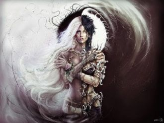
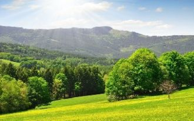

Моё платье - твоих рук родные объятья. Мои чувства, давно живут на распятье. Второпях, на губах согреваются страстью.
Свет твоего окнаДля меня погас,Стало вдpуг темно.И стало всё pавно,Есть он или нет,Тот волшебный цвет...Свет твоего окна -
Как хорошо что есть родимый дом что в нем еще не прохудилась крыша и словно в детстве печка хлебом дышит и в доме пахнет теплым молоком.
Дни проносились разлук и ночи слёз.Ах! Как же ранят шипами стебли роз.Но я нашей встрече рада,Я ждала тебя!
Всё пройдёт и печали, и радость.
Всё пройдёт, растворится усталость.
Всё пройдёт и про нас позабудут.
Среди чащоб коварных и дремучих,Среди приветливых берез,Средь колдунов-дубов могучих,Полей, не ведавших колес,Она бежит, едва касаясь почвы,
Пролетают, пролетают дниКак птицы, унося с собою грусть, печаль.Забывая, забываяВсе невзгоды. Всё былоеПусть уходит в даль.
Ты спишь, а на улице ветерТы спишь, а на улице дождьЗа наши дела только мы лишь в ответе,Надеюсь, ты это поймешь
***
Разлука есть особое понятье.
И каждый может сам придумать знак.
В разлуке есть высокое значенье:
Любовь как сон и это так.
Уйди, оставь меня на веки.
Окутав зрителя обмана дымкой сладкой, Колдует, равнодушных не оставив,На театральных питерских площадкахВолшебник Александр Муратаев.
Слышишь, – я кричала морю,

Двуликий Янус – страшный человек,

En la Forest a mainte chose. En la Forest on se repose. En la Forest faict beau chasser, Beau Chanter, beau le temps passer,
Quoi de plus exaltant, quoi de plus merveilleux Que d'entendre l'écho de tous nos mots d'amour ! Quoi de plus déplaisant que ce dédain odieux